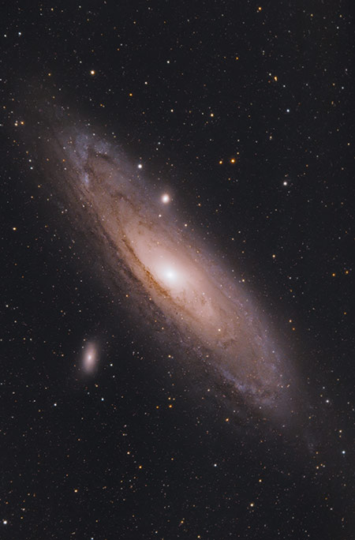
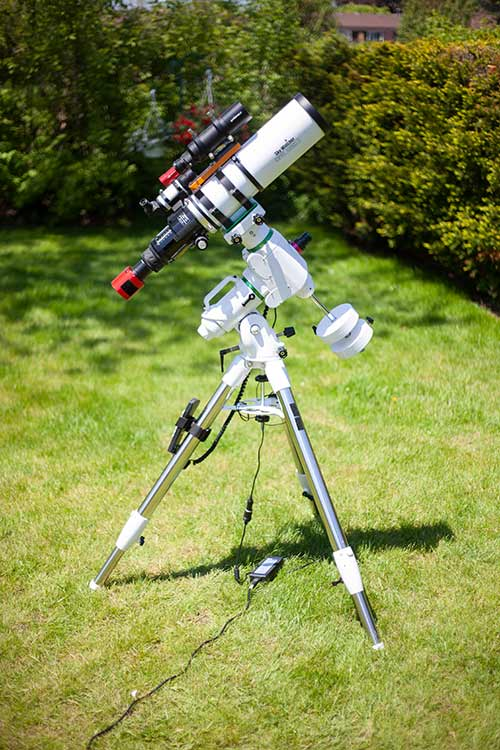
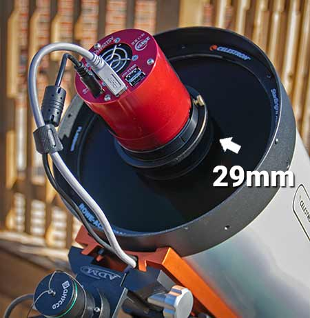

Many people have heard of astronomy, and most have heard of photography. What do you get when you combine them? Astrophotography! Astrophotography is not just about taking pictures of the moon, or a wide field picture of the stars, as anyone can do that, it's really about taking pictures of "deep sky" objects such as the Andromeda Galaxy, which is pictured below. Many have seen pictures that the Hubble telescope has taken, but would you believe that the picture below was taken through a telescope with a camera from some guys backyard? Crazy right? Allow me to explain some basics of astrophotography so you can understand how it works.
© AstroBackyard
To take pictures of deep sky objects, you definitely need a telescope. The telescope doesn't even have to be that large; the one in the picture below is able to take pictures of distant galaxies and nebulas in space. However, to produce such images you have to have a tracking mount. A tracking mount is a device (usually on a tripod) that rotates opposite of the earths rotation that way when taking hour-long exposures of an object it stays in the center of the frame. When astrophotographers take pictures of objects such as galaxies, they usually take many long exposure photographs and stack them once they are finished. This is why having a tracking mount is essential, because if the photos are even a few millimeters off it will produce a blurry photo after stacking.
© AstroBackyard
Finally, the camera. There are a few things to look for in a camera that you want to use for this hobby. Having a full frame camera, which means the sensor, or eye, of the camera is equivalent to the size of standard film, which is36x24mm, this allows for a large field of view and allows the camera to receive more light data. Think of a fullframe sensor as a 5-gallon bucket and a smaller sensor as a coffee mug both outside in the rain, which will catch more water in 30 minutes? Yes, the bucket, because it's bigger. Now, think of the rain drops as photons of light, because the more photons of light you collect, the more you will see in the picture.
There are also dedicated astrophotography cameras such as the red one shown below, which is called a CCD camera. These are solely meant to be attached to a telescope. The reason they are generally better for this type of photography is that they are more sensitive to light compared to a DSLR or mirrorless camera that you see commonly with normal photography. CCD cameras are often only monochrome (black and white). This means you need a red, green, and blue filter to get the full color of an image. This also means to do so you have to take 3 sets of pictures one set being red, the other green, and the last blue. This gives you as much data as possible for your picture.
© AstroBackyard
If you are interested in more details here are some links below to fill you in.
© John W. Oct. 26, 2022